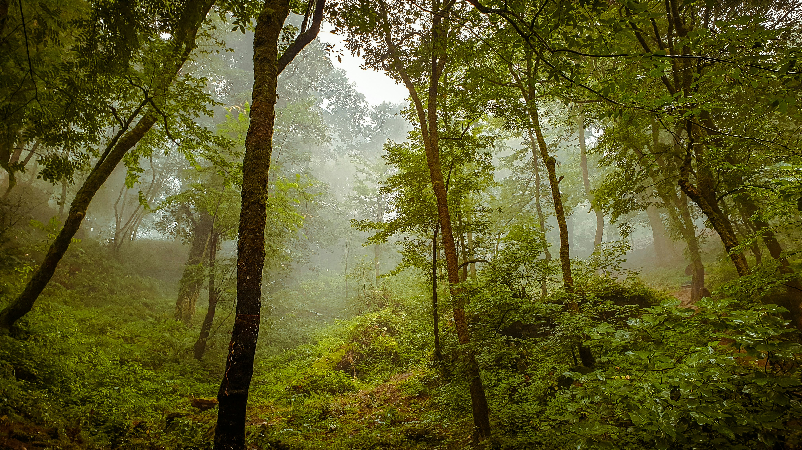
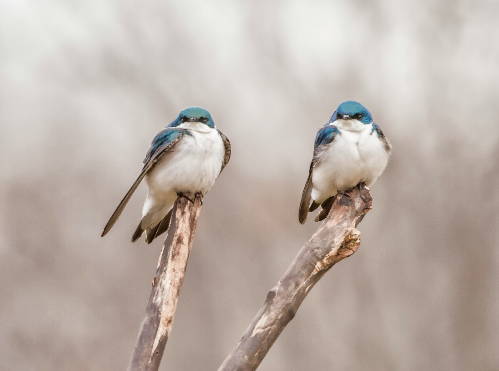
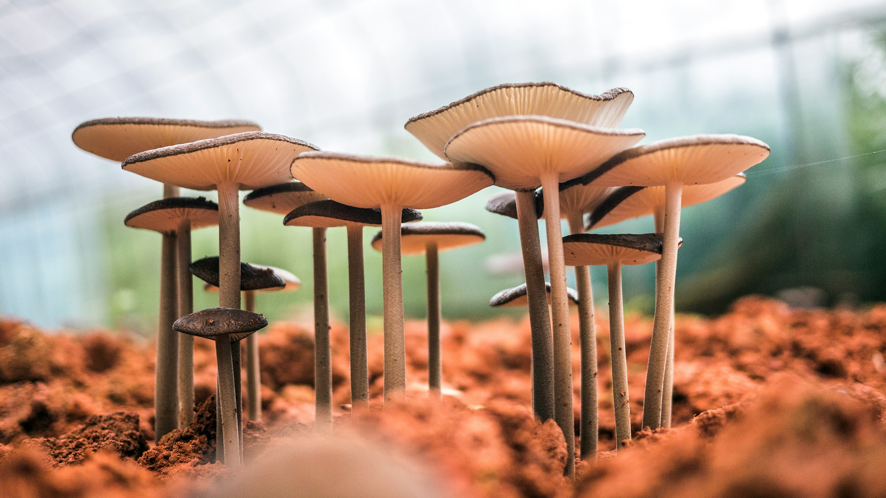
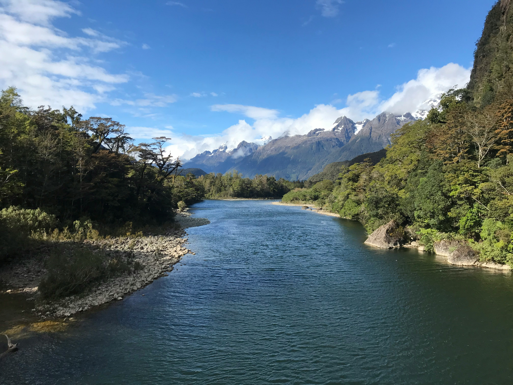

A Importância das Florestas Tropicais
Publicado em 19 de agosto de 2025 por João Silva

As florestas tropicais são os pulmões do nosso planeta. Elas abrigam uma biodiversidade incrível e desempenham um papel vital na regulação do clima global...
Ler mais...
Observando Pássaros: Um Guia para Iniciantes
Publicado em 15 de agosto de 2025 por Maria Oliveira

A observação de pássaros, ou "birdwatching", é um hobby relaxante e gratificante. Não é preciso ir longe para começar; a sua própria janela ou quintal já pode ser o ponto de partida...
Ler mais...
A Vida Secreta dos Oceanos Profundos
Publicado em 10 de agosto de 2025 por Ana Costa

O fundo dos oceanos é um mundo à parte, com criaturas que desafiam a nossa imaginação. Descubra como a vida se adapta à escuridão e à pressão extrema...
Ler mais...
O Ciclo das Estações e sua Influência na Natureza
Publicado em 05 de agosto de 2025 por Pedro Santos

Da flor que desabrocha na primavera à neve que cobre as montanhas no inverno, as estações moldam a vida na Terra. Entenda a ciência por trás dessas mudanças...
Ler mais...
Montanhas: Gigantes da Terra e seus Ecossistemas
Publicado em 29 de julho de 2025 por Luana Gouveia

As montanhas não são apenas elevações geográficas; elas são ecossistemas complexos com flora e fauna únicas. Conheça as adaptações da vida em altas altitudes...
Ler mais...
A Magia do Mundo Fungi: Mais que Cogumelos
Publicado em 22 de julho de 2025 por Carlos Ferreira

Os fungos são um reino de vida fascinante, desempenhando um papel crucial na decomposição e no ciclo de nutrientes. Descubra a sua importância oculta...
Ler mais...
Desertos: Oásis de Vida Sob o Sol Forte
Publicado em 18 de julho de 2025 por Juliana Pires

Contrariando a crença popular, os desertos estão repletos de vida. Explore como plantas e animais desenvolvem estratégias incríveis para sobreviver à falta de água...
Ler mais...
Rios: As Veias do Planeta e a Vida que Eles Sustentam
Publicado em 12 de julho de 2025 por Rafael Lima

Desde a sua nascente até a foz, os rios são fundamentais para os ecossistemas e para a vida humana. Mergulhe na importância dos rios e na sua preservação...
Ler mais...